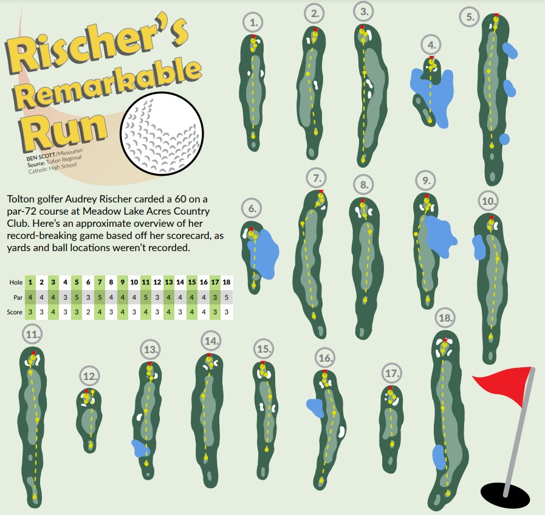
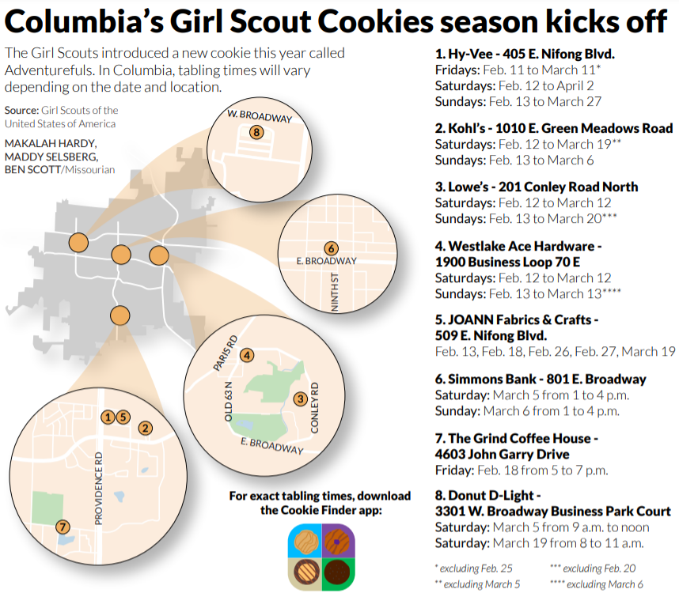
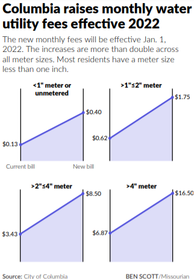
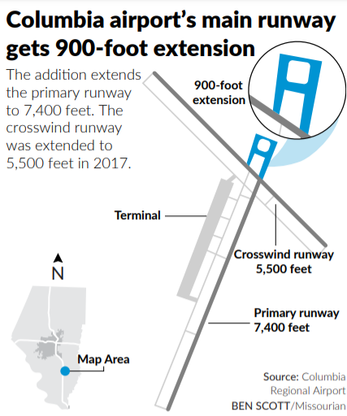

![A headline says 'Meet the UM curators and their partisan wallets.' There are two horizontal bar charts as the main visual, both on the same 0 baseline but are mirrored. Imagine a bird spreading its wings – that’s what the two bar charts look like. Each row represents a different member of the MU Board of Curators. The left bar chart shows democratic donations. The right side shows republican donations. Greg Hoberock is on a separate scale because he donated much more than the others, around $448,000 in all, all towards Republican causes save for $1,500 to Democratic recipients. The order of total donated goes as follows. Graham: 55,700, vastly Democratic. Graves: about $44,000 fully Republican. Layman: $32,000 Republican and $5,250 Democratic. Brncic: about $17,500 Republican and about $9,200 Democratic. Wenneker: about $7,200 Republican and $9,900 Democratic. Williams: $3,800 Republican and about $11,300 Democratic. Holloway: $5,600 Republican. Chatman no donations. Graves leads all with nonpartisan donations at $9,900, the rest around $1,000 or below.](images/um-curators.png)


![A graphic shows an illustration of the James Webb Space Telescope. The telescope looks futuristic, with a collection of yellow hexagons sitting vertically on top of a grey, triangular base. A researcher from the University of Missouri got a chance to use the telescope to observe the M82 galaxy.The graphic shows the distance between Earth and the moon, which is 238,855 miles on average. It then shows the distance from Earth to the telescope, about 1 million miles at its L2 position. The L2 position is the place where it will begin orbiting the earth.The graphic then contextualizes how far away the M82 galaxy is from Earth, a distance of 12 million light-years. That’s the same as 284 billion trips from St. Louis to Kansas City, 3 billion trips around the world, represented by an illustration of a red hot air balloon in the foreground of a globe. A grey rocket with red fins in the foreground of Pluto represents 20,000 trips from Earth to Pluto is equal to 12 million light years.](images/james-webb.png)
![The headline says ‘Columbia residents to vote on park sales tax renewal. The graphic shows a gray outline of Columbia city limits, with four green pop-out maps branching from the map. The four pop-outs locate 4 individual proposed hiking trails for the city. The trails are all part of a 30-mile trail loop plan, shown as a purple loop on the city limits map. The proposed trails are named and located as follows: Bear Creek Trail from Lange School to NE Regional Park; Hinkson Creek Trail from Clark Lane to Vandiver Drive; Perche Creek Trail from Gillespie Bridge Road to Smith Drive; Colt RR Trail from College Avenue to Brown Station Road.](images/trails.png)
![The headline says ‘Columbia area gains additional state House seat.’ The graphic shows two maps of state House districts around Boone County, one before and one after. The before shows the two large districts passing the border of Boone County, one large district contained within and two small districts where Columbia is located. There are colored on a scale from purple to green. The after map shows the 2 large districts contained in the county and three small districts in the Columbia area – essentially one large district is lost in favor of a smaller district for the Columbia area.](images/redistrict.png)
![A full-page graphic with the headline ‘Airlines struggle as COVID-19 soars.’ All charts are colored in a bluish-gray hue. An area line chart takes up the first third of the page. It compares passengers checked by the TSA in 2019 and 2020. In 2019, passenger numbers hover between 2 million and 2.5 million all year. In 2020, numbers drop dramatically from 2million in the beginning of March to around 200,000 by the end of March. Below the area line chart, a smaller area line chart shows the number of COVID-19 cases during the same time span. In a new section, a headline reads ‘Lower load factor on planes leads to lower average airfares.’ Load factor is essentially the percentage of seats filled on a plane. Three individual line charts show how a drop in load factor in 2020 and a drop in operating revenue in 2020 lead to a drop in average airfare by nearly 29% from the previous quarter in 2019. One final section shows how Missouri airports were impacted by COVID-19 in 2020. Airports in Columbia, St. Louis and Kansas City all see almost exactly the same trend, where total traffic drops nearly 100% in April and slowly recovers from then on.](images/airline3.png)


Read the codeUsed D3 to make an animated map showing the 7-day average COVID-19 cases per 100k for U.S. counties, going back to the beginning of 2020. God, I'm a wizard (only semi-joking). pic.twitter.com/zjsw0OH7Lf
— Ben Scott (@benpedroscott) October 11, 2021
"Airlines struggle as COVID-19 soars" won the Missouri Press Associations's Best Infographic award for 2020. Hover over each graphic to enlarge. Click to download the pdf.